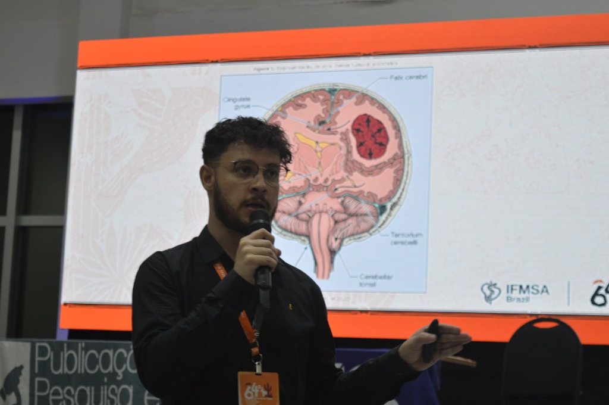
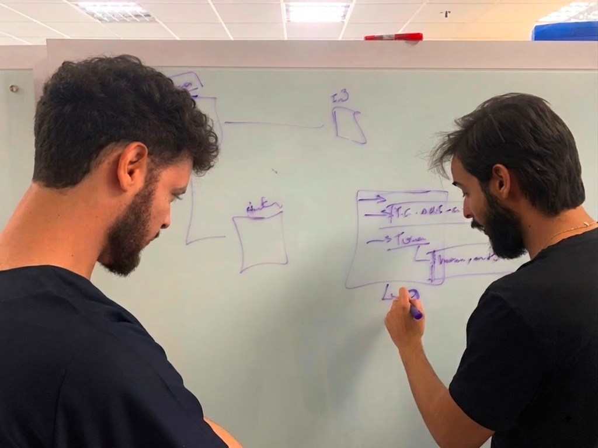
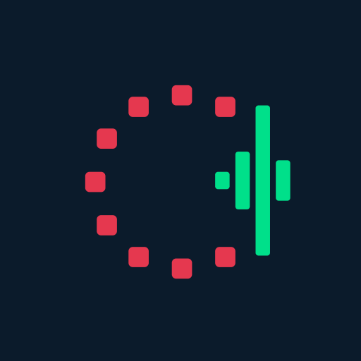
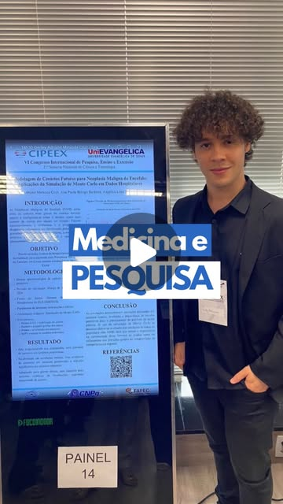
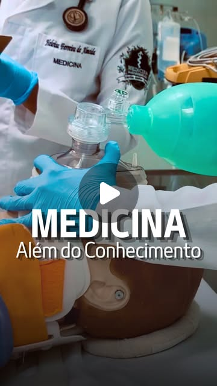
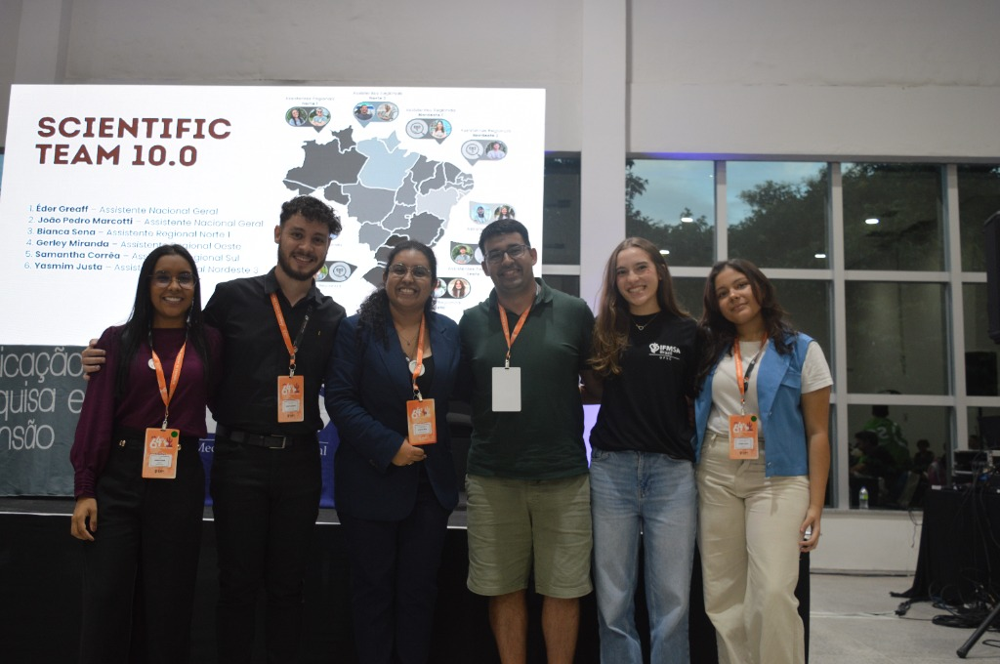

Brazilian undergraduate medical student at UniEVANGÉLICA, researcher in healthcare AI, biostatistics, and medical software. Statistical reviewer for the Brazilian Medical Students Journal, Western Regional Assistant for IFMSA Brazil's scientific team, and founder of Cardio, dedicated to building intelligent solutions that transform evidence-based medicine.

Presenting research at national medical congress
Architecture & software engineering for healthcareFeatured Venture

Gamified platform for electrocardiogram training and clinical decision-making in cardiovascular emergencies and ACLS protocols under pressure. Features 112+ real rhythm tracings, 25 clinical protocols, and performance analytics to track diagnostic progression.
Awards & Honors
Academic & Research Experience
Leadership & Engagement
Institutional Spotlight · Instagram Reels


Featured In
